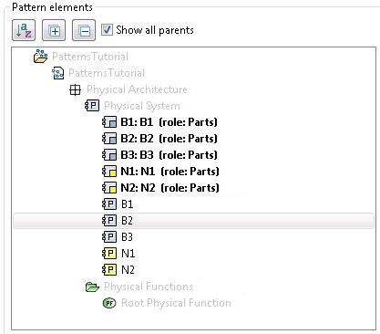
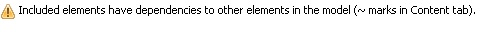
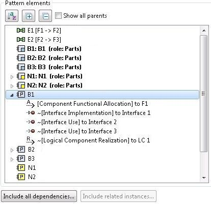
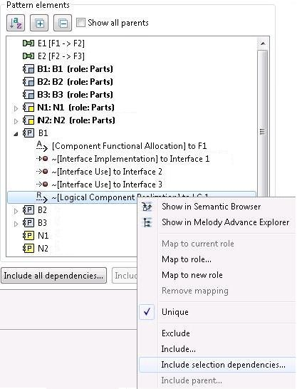
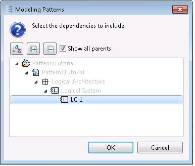
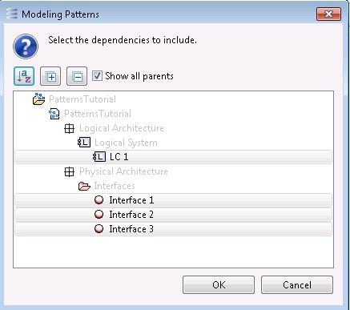

Pattern elements
Pattern elements are represented in the “Pattern elements” section. They correspond to the elements initially selected (or previously marked, see
section “Pattern Creation”) when the wizard is started.
Note (Capella only): If there is a doubt about what elements are present, it is possible to show an element in the Semantic Browser or in the Project Explorer via the dedicated menu items (the Capella shortcuts, however, do not work in this dialog).
By default, pattern elements are sorted by type and name: all components are grouped together, then all functions, etc., and within each group the ordering is alphabetical. Alternatively, all elements can be simply sorted by name thanks to the Sort button (figure below).

The buttons featuring the symbols “+” and “-“ allow expanding and collapsing the contents of the elements. The “Show all parents” check box provides an alternative representation where the elements are situated within the model tree.

The set of pattern elements can be modified via the “Exclude” and “Include…” menu items. The former removes the selected pattern elements. The latter pops up a dialog for choosing additional elements to include, where the elements already included are highlighted by default (figure below).

The “Include parent…” menu item allow including the parent elements of the current selection. This is typically useful if a Port has been included by some way and the user wants to include the Function or Component that contains it.
If the pattern elements reference elements outside the pattern, this is identified as a “dependency”. A pattern is always self-contained, so every dependency from a pattern element is finally removed when the pattern is created.
The presence of a dependency may thus be normal (the contents of the pattern do not have to strictly match what is in the model) but it may also indicate that the user forgot to include an element in the pattern. If a dependency is detected, a warning appears at the top of the wizard page.

As indicated in the warning, the pattern elements that have dependencies are identified by the tilde (“~”) prefix. In the figure below, a Component “B1” implements “Interface 1” and uses “Interface 2” and “Interface 3” but these Interfaces have not been included in the pattern.
Consequently, the “Interface Use” and “Interface Implementation” technical links of the component are represented with a “~”. The component also has a “Logical Component Realization” which is a technical link to the Logical Component from which it was transitioned.

When an element is represented with a “~”, menu item “Include selection dependencies…” is enabled on it. This menu item allows including the missing element(s) in order to resolve the dependency.

A dialog representing the dependency elements is displayed. Just select the ones to include and click OK.

In addition, the “Include all dependencies…” button allows seeing all the dependencies of the pattern. Again, select the elements to include and click “OK”.

Note that all dependencies need not be resolved. If, for example, the Logical Component must not be included, the “Logical Component Realization” link can be excluded instead.